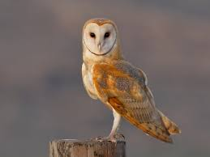
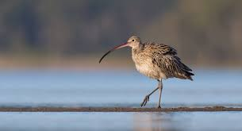
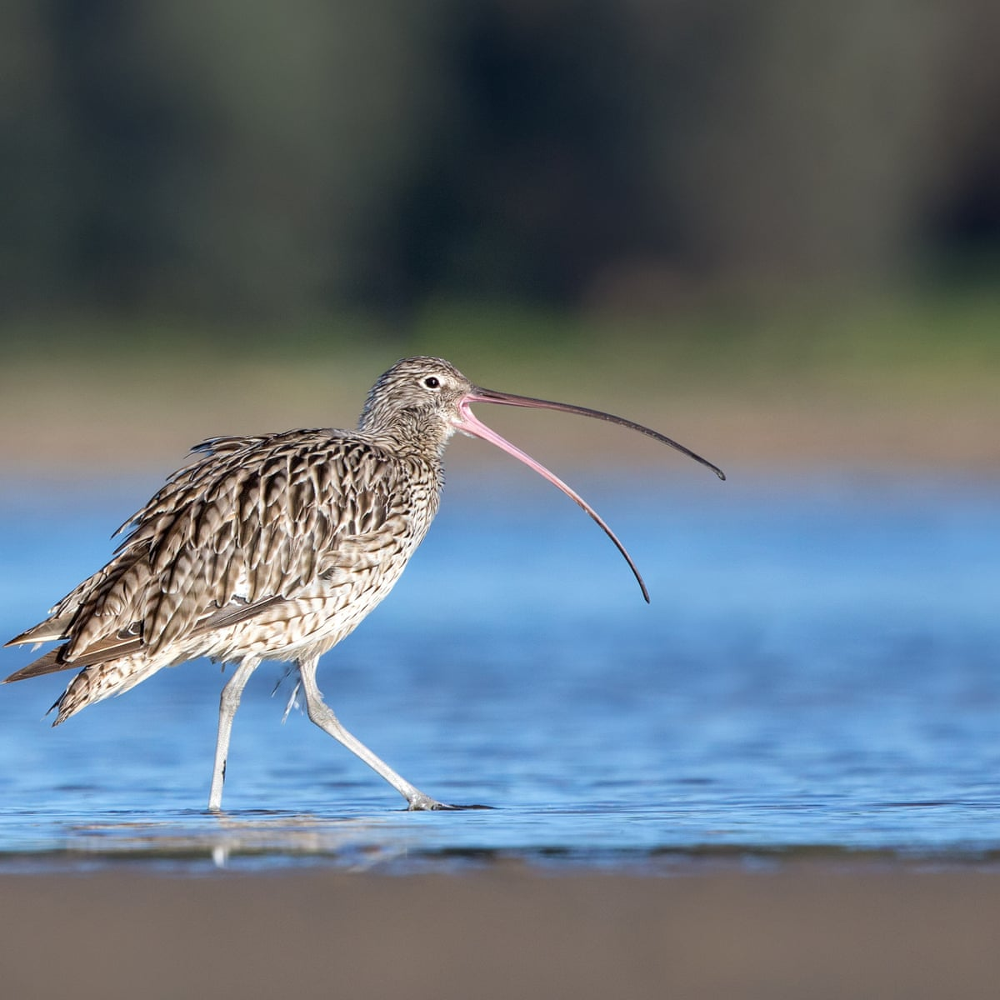

My favourite places to see in Ireland
Barn Owl
The barn owl is the most common owl and is found in most parts of the world. It has seen a huge decline in Ireland and Europe in recent years.
Curlew
The curlew is recognisable by its long curved bill.
Curlews use their long bills to search for worms in mud or very soft ground.
Ways to conserve the birds